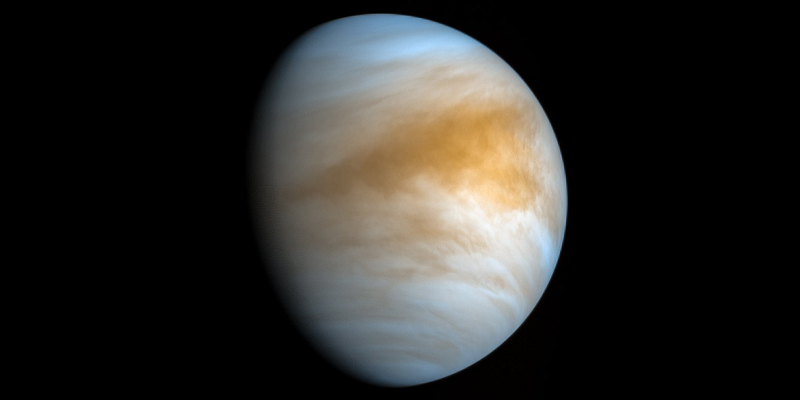
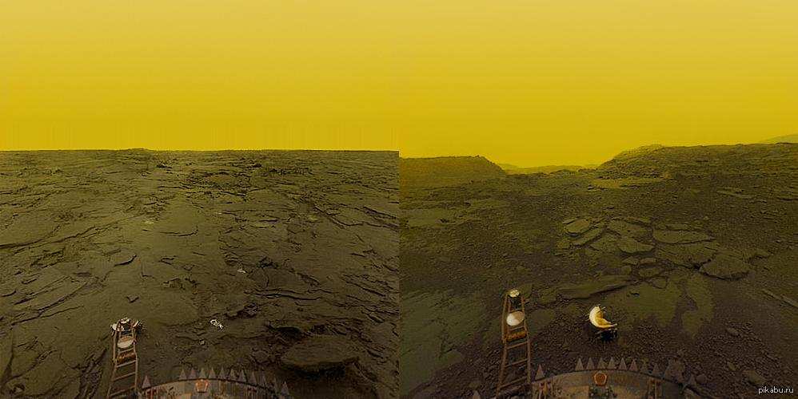
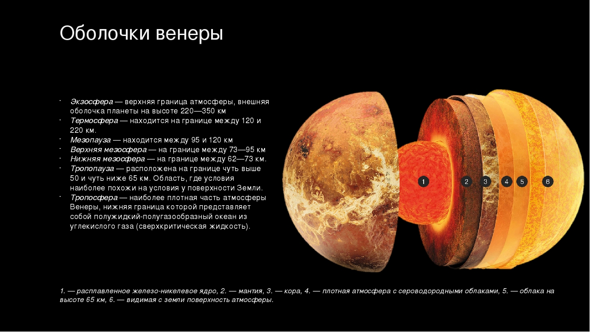

Венера - горячая и загадочная

Вторая от Солнца – планета Венера, является наиболее приближенной к Земле и, пожалуй, самой красивой из планет земной группы. Она тысячелетиями приковывала к себе любопытные взгляды от ученых древности и современности, до простых смертных поэтов. Недаром она носит имя греческой богини любви. Но ее изучение скорее прибавляет вопросы, чем дает какие-нибудь ответы.
Один из первых наблюдателей, Галилео Галилей, наблюдал за Венерой с помощью подзорной трубы. С появлением в 1610 году более мощных оптических устройств, таких как телескопы, люди стали отмечать фазы Венеры, очень напоминавшие лунные фазы. Венера – одно из самых ярких светил на нашем небе, поэтому в сумерках и утром, можно увидеть планету невооруженным глазом. Наблюдая ее прохождение перед Солнцем, Михайло Ломоносов в 1761 году рассмотрел тоненький радужный ободок, окружавший планету. Так случилось открытие атмосферы. Она оказалась очень мощная: давление возле поверхности достигало 90 атмосфер! Парниковый эффект, объясняет высокие значения температуры нижних слоев атмосферы. Он имеется и на других планетах, например на Марсе, за счет него, температура может подниматься на 9°, на Земле – до 35°, а на Венере – он достигает своего максимума, среди планет – до 480° C.
Поверхность планеты
Поверхность тектонически активна. Об этом свидетельствуют окаменевшие потоки лавы и каменные осыпи свежего происхождения. Главные континенты Венеры – Земли Иштар и Афродиты, по площади сопоставимые с нашей Европой, имеют многочисленные вулканы. Венера считается самым вулканически активным небесным телом Солнечной системы.

Рельеф планеты разнообразен. Тут имеются и ровные участки, и местности с перепадами высот в 2 – 3 километра. Существуют круглый бассейн в 1500 километров и равнина протяжённостью 800 км. Также найдены метеоритные кратеры, имеющие диаметр от 35 до 150 км.
Внутреннее строение Венеры

Строение Венеры, нашей соседки, аналогична другим планетам. Оно включает в себя кору, мантию и ядро. Радиус жидкого ядра, содержащего много железа, составляет примерно 3200 км. Структура мантия – расплавленное вещество – равно 2800 км, а толщина коры – 20 км. Удивительно, что при таком ядре, магнитное поле практически отсутствует. Скорее всего, это происходит из-за медленного вращения. Атмосфера Венеры, доходит до 5500 км, верхние слои которой, почти полностью состоят из водорода. Советские автоматические межпланетные станции (АМС) «Венера-15» и «Венера-16» еще в 1983 году, обнаружили на Венере горные вершины с потоками лавы. Сейчас количество вулканических объектов достигает 1600 шт. Вулканические извержения, свидетельствуют об активности недр планеты, которые заперты под толстыми слоями базальтовой оболочки.
Плотность и объём атмосферы
90% её скопилось до высоты 28 километров, и масса составляет одну треть от массы мирового океана нашей планеты. Азота в атмосфере очень мало, но абсолютное количество его в пять раз больше содержания в земной атмосфере. Плотность атмосферы у поверхности Венеры в 50 раз больше земной. Облачный двадцатикилометровый слой, нижняя кромка которого начинается на высоте 50 километров, состоит в основном из серной кислоты. Вряд ли дождь на этой планете может оказаться животворящим.
Спутники
Только Венера и Меркурий не обзавелись спутниками. Правда, в XXVII – XXVIII веках многие астрономы пытались отыскать спутники Венеры и даже вроде бы их находили, но в итоге эти открытия оказались ошибочными. Есть такой астероид 2002 VE, считающийся квазиспутником. Он со своей спутницей уже 7000 лет, но вскоре её покинет.
Загадки планеты
Ввиду недоступности детального обследования планета Венера является самой таинственной планетой Солнечной системы. Вот некоторые её тайны:
-
Вращение планеты. Это главный вопрос, до сих пор не получивший ответа. Почему все планеты вращаются в одну сторону, а Венера – в другую? Предполагают, что когда-то произошло столкновение с неким объектом, спровоцировавшее изменение этого параметра.
-
Молнии. По всем правилам, молний тут быть не может, ведь местные облака по сути своей — серная кислота. Но Venus Expres их зафиксировал. Доказательства электрических бурь Венеры вступают в противоречия друг с другом. Или наука ещё не всё поняла в образовании и формировании этого явления.
-
Суперротация. Атмосфера Венеры проносится над поверхностью в 20 раз быстрее самого вращения планеты. Невозможно понять, почему поверхность не притормаживает этот ураган.
Дополнительная информация

Период обращения вокруг Солнца: 224,7 суток.
Диаметр на экваторе: 12104 км.
Период вращения (оборот вокруг оси): 243 дня.
Температура поверхности: 480 градусов (средняя).
Атмосфера: плотная, в основном углекислый газ.
Сколько спутников: 0.
Главные спутники планеты: 0.